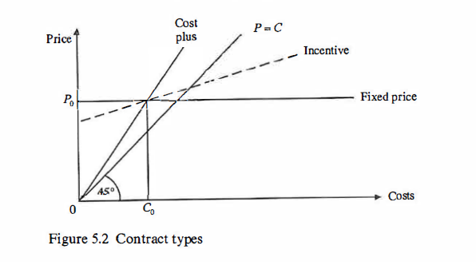
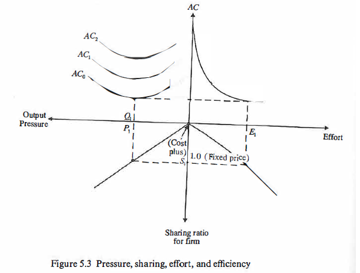
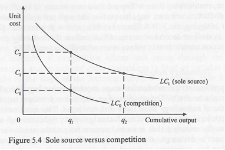
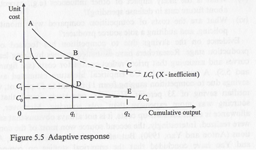
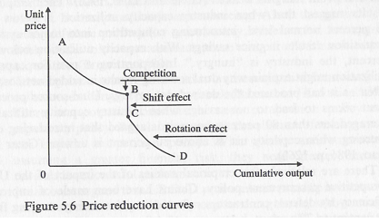

Introduction
- The chapter reviews literature on defence contracts and competitive procurement, exploring various contract types and the decision-making processes in defence equipment acquisition.
- The complexity of contracting involves transaction costs related to acquiring information, organizing competitions, bargaining, and enforcing contracts.
- The government, as a buyer or principal, must specify requirements and ensure that contractors pursue the principal’s goals.
- Contracts that cannot detail all buyer requirements may lead to discretionary behaviour by contractors, influenced by their preferences.
- Monitoring and enforcing contracts require measurable outputs, and incentives and penalties in contracts impact the behaviour of agents.
- The chapter reviews traditional approaches to defence contracting, cost-estimating relationships, and various contract types, including recent theoretical developments.
- Focus is given to market features, agent behaviour, and responses to contractual incentives and regulatory constraints.
2.1 Market Failure
- Defence equipment markets function similarly to other markets by connecting buyers (defence ministries and armed forces) with sellers (defence industries).
- The demand for defence equipment comes from national defence ministries, armed forces, and overseas governments, while defence industries, both nationally and internationally, supply the equipment.
- The interaction between demand and supply is formalized through legally binding contracts, where buyers commit to paying a specified price for a product delivered on time.
- Governments, acting as buyers, may impose regulatory requirements on contractors, such as profit controls, adding a layer of oversight.
- The text introduces Figure 5.1, illustrating the market situation with a UK example.
- Despite similarities, defence equipment markets have unique characteristics, including the central role of * governments, cost trends, technical progress, cost curves, and regulatory aspects.
- The government’s role is crucial in determining technical progress, choosing equipment, and deciding whether to import or buy domestically.
- Cost trends indicate that defence equipment, especially high-tech items, tends to become costlier over time.
- Technical progress is a distinctive feature, leading to new products and markets, but also resulting in a smaller number of large firms dominating high-tech sectors.
- Cost curves show that production costs of defence equipment increase over time, leading to downward pressures on the size and structure of armed forces.
- Regulation plays a significant role in defence markets, with governments determining market openness, monitoring costs, and regulating profits on defence contracts.
- The text refers to previous work by Peck and Scherer in 1963, highlighting the enduring relevance of these considerations in defence equipment markets.
Government Influence in Defence Markets and Policy Objectives.
- As a monopsonist, the government determines technical progress by choosing equipment and decides whether to import or buy domestically.
- Government influence extends to determining the size and composition of its domestic defence capabilities.
- The choice of defence equipment, including combat aircraft, missiles, submarines, and tanks, impacts the industry’s structure, entry and exit, prices, exports, and profits.
- Some advocate for an interventionist approach, using defence procurement to support “key” technologies and back industry winners as part of national industrial policy.
- Supporters of free markets, such as Austrian economists, criticize this interventionist stance, emphasizing the uncertainty of the future and the unintended consequences of government involvement.
- Public choice analysis predicts potential government failures in efforts to improve economic performance.
- The use of defence procurement as an instrument of industrial policy raises fundamental questions about the objectives of defence policy.
- Questions arise regarding whether defence procurement aims at efficiently acquiring equipment for national defence or pursuing broader economic and social objectives, including protecting the national defence industrial base.
Challenges of Rising Costs in Defence Equipment and Adaptive Procurement Policies.
- High technology defence equipment is costly and experiencing rising costs in real terms.
- Examples include the estimated $35 billion cost for fifteen American B2 stealth bombers and approximately $130 million per copy for the US F-22 advanced tactical fighter aircraft (1991-2 prices).
- Despite increased costs, new equipment is more productive than previous generations.
- Real unit production costs of defence equipment, including aircraft, helicopters, missiles, warships, and submarines, increase by about 10 percent per annum.
- This cost trend implies a doubling in cost approximately every 7.25 years.
- Defence budgets often fail to match these cost increases, leading to downward pressures on the size and structure of armed forces.
- There is a need to reshape defence industries supplying the forces, evident in long-term trends like a one-ship navy and a one-aircraft air force.
- Efforts are made to address these challenges through adaptive procurement policies, such as competition policy, aiming to postpone some of the adjustment effects associated with rising costs.
Evolution of Defence Equipment Markets and the Impact of Technical Progress.
- Technical progress is a distinctive feature of defence equipment markets.
- Major advances, such as in jet engines, missiles, electronics, and helicopters, create new markets.
- Firms must invest in new development and production facilities with a focus on research and development (R & D).
- Since 1945, there’s a long-term trend towards fewer, larger firms, seen through mergers and exits from the defence sector.
- High technology sectors, like aerospace and avionics, often have one or a few large national suppliers, forming a monopoly or oligopoly.
- This market structure deviates significantly from the economists’ model of perfect competition.
- Defence spending cuts in the USA, UK, and the EU during the 1990s contribute to exits from the industry and restructuring around fewer large defence contractors.
- EU states may maintain competition by opening their national markets to foreign suppliers.
Economies of Scale and Competitiveness in High Technology Defence Sectors.
- Some defence industries, especially high-tech sectors, exhibit decreasing costs, emphasizing economies of scale.
- A national market in such sectors may only support one firm, resembling a monopoly.
- Quantity becomes a critical factor in determining unit costs and overall competitiveness.
- Long production runs allow for spreading high fixed research and development (R & D) costs over a larger volume.
- Scale and learning economies in production contribute to cost efficiency and competitiveness in high-tech defence sectors.
Government Regulation and Profit Controls in Defence Markets.
- Defence markets and industries are subject to government regulation.
- Governments have the authority to determine whether national markets should be open or closed.
- Monitoring costs and profit controls on defence contracts are common regulatory practices.
- Profit controls aim to prevent excessive profits or losses on defence business and maintain a domestic industrial base.
- Profit levels may not serve as a standard signalling mechanism for entry or exit due to regulatory constraints.
- Profit-conscious firms may adapt by increasing expenditure on unregulated items, such as luxury offices, company cars, and hoarding scientists and engineers.
- The Tisdell and Hartley (1981) reference provides further insights into microeconomic policy in this context.
2.2 Demand: procurement policy
- Procurement Policy:
- Represents the demand side of the defence equipment market.
- Involves choices, with defence contracts being one element in the choice set.
- Equipment Choices:
- Implications for technical progress.
- Involves choosing between competing demands from armed forces with a limited defence budget.
- Decisions often made on the principle of “Buggin’s Turn.”
- Choice of Contractor:
- Selection based on direct negotiation or competition.
- Market can be restricted to domestic firms or open to foreign suppliers.
- Public choice analysis predicts opposition from domestic firms against foreign suppliers.
- Choice of Contract:
- Options include firm or fixed-price contracts, cost-plus contracts, or intermediate arrangements.
- Firm price contracts have no variations, while fixed-price contracts allow for agreed variations.
- Cost-plus contracts can lead to inefficiency, cost escalation, and “gold-plating.”
- Incentives to Choose:
- Efficient solutions depend on incentives and penalties in employment contracts of procurement staff.
- Lack of inducements to economize may lead to overspending.
- Decision-Making Process:
- Equipment choices often made by a committee.
- Committee size, objectives, composition, chairman’s background, and voting arrangements are crucial.
- Public Choice Analysis:
- Predicts government policies favouring producers over consumers in defence contracting.
- Budget-maximizing bureaucracies are expected to be inefficient.
- Economist’s Evaluation of Procurement Policy:
- Traditional application of standard economic models of free trade and competition.
- Competitive bidding opportunities considered in various project life cycle stages.
- Historical Context:
- Pioneering contributions in microeconomics of defence emerged in the 1960s, particularly by American economists, with the Rand Corporation in the forefront.
- Hitch and McKean’s classic text briefly covered defence contracting in 1960.
2.3 Competition, firm behavior, bargaining, and contract types
- The Weapons Acquisition Process: Economic Incentives (Scherer, 1964)
- Defines economic aspects of defence contracting.
- Serves as a benchmark for subsequent developments in defence contracting theory and policy.
- Features of the Weapons Acquisition Process:
- Development work involves uncertainty, shifting financial risks from contractors to the government.
- Contractors gain specialized information and assets, leading to a bilateral monopoly bargaining situation.
- Conventional market system not feasible; relies on a non-market, quasi-administrative relationship.
- Government intervention required through controls or incentive mechanisms for successful acquisition.
- Incentives:
- Can be competitive (via breakout and second sourcing) or contractual.
- Breakouts in the 1960s showed price reductions of 20% compared to non-competitive negotiations.
- Second sourcing involves selecting multiple firms to produce a weapon system, reducing costs but not without challenges.
- Contractual incentives used for monitoring and policing contractors.
- Defence Contract Agreement:
- Reflects preferences of government procurement agency and contractor.
- Governments aim to balance contractor efficiency incentives, risk of excessive profits, and contract outlays.
- Conflict between fixed-price contracts (efficiency vs. profit risk) and cost reimbursement contracts (minimize profit risk but remove efficiency incentives).
- Incentive contracts provide a compromise solution.
- Negotiation Process:
- Contractor’s knowledge of costs gives them a bargaining advantage.
- Government can use competition from national or foreign firms to check on a contractor’s price bid.
- Incompleteness in contracts may allow contractors to make cost-quality trade-offs.
- Bargaining Dynamics:
- Outcome reflects bargaining power, strategies, and tactics of both parties.
- Contractors seek favourable cost and price targets, shifting risks and maximizing profits.
- Government has power through competition, but contractor knowledge of costs remains a challenge.
2.4 Cost-estimating relationships
- Purpose of Cost Estimates:
- Used by industry and defence procurement agencies for planning, bidding, and checking cost estimates.
- Applied in the initial planning phase, firm’s project bids, and validation of cost estimates by defence agencies.
- Reliability of Early Estimates:
- Early estimates for advanced technology defence projects are typically unreliable.
- Studies show projects often experience a 40-70% real cost increase from initial estimates to completion.
- Cost escalation attributed to modifications, changes in requirements, technical uncertainties, and contractor optimism.
- Governments’ belief in awarding contracts to the lowest bidder may contribute to cost escalation.
- Challenges in Early Cost Estimates:
- Low estimates may create conditions for cost escalation.
- Recognizes the unreliability of early cost estimates, suggesting the need for better techniques or alternative procurement policies.
- Caution recommended as no single method or strategy suits all situations.
- Methods for Cost Estimation:
- Engineering estimates
- Comparative methods
- Parametric methods
- Learning curves
- Engineering Estimates:
- Based on estimated costs of materials, equipment, components, labour, and overheads.
- Fox (1974) and Sissons (1986) referenced in this method.
- Comparative Methods:
- Relies on historical comparisons of similar projects (e.g., combat aircraft, transport aircraft).
- Graphs show trends over time, such as the positive and increasing trend in technical man hours per pound of empty weight for UK combat aircraft development work.
- Rules of thumb used for estimating development cost to unit production cost ratios (e.g., 1,000:1 for guided weapons, 100:1 for combat aircraft with an existing engine).
- Rules of thumb also applied to estimate life-cycle costs, considering acquisition and ownership costs (R&D, production, operating, maintenance, and disposal costs).
- UK evidence provides specific ratios for warships and combat aircraft life cycle costs.
- Caution advised in using rules of thumb, as adjustments may be needed for variations in program complexity compared to “typical” projects.
- Parametric Methods:
- Forecast future R&D project costs based on cost profiles of historical R&D project data.
- Project R&D costs front-loaded, rising steeply toward midpoint, then falling with production.
- Optimal control model by Cavin (1991) aligns with empirical data.
- Multiple regression analysis used in parametric methods, often from US Rand Corporation.
- Log-linear equations estimate engineering and manufacturing hours based on aircraft weight, speed, and production quantity.
- Rand study identifies most accurate cost-estimating relationships based on empty weight and speed.
- Changes in technology, materials, and design concepts may affect conventional cost-estimating relationships.
- Similar models developed for estimating cost changes in US Navy ship-building programs.
- Learning Curves:
- Apply to production programs and used for cost-estimating and contract negotiations.
- Reflect productivity increase with experience, expressed as y = aX^-b.
- 80% learning curve indicates 20% decline in direct labour inputs for each doubling of cumulative output.
- Distinction between unit and cumulative average learning curves.
- Examples of labour learning curves based on European experience shown in table 5.1.
- Evidence of learning limit, especially for warships, occurring between four and twelve units.
- Learning curves not unit cost curves; effect on unit production costs depends on the share of labour costs.
- Challenges in estimating parameters (a and b), uncertainty about continuous learning, and potential impacts of modifications on learning.
- Various hypotheses exist about operator and management learning, machine-intensive operations, assembly work, labour turnover, and payment systems.
- Deficiencies in Cost-Estimating Relationships:
- Lack of quality industrial economics case studies in defence industries.
- Need evidence on long-run average cost curves, minimum efficient scale, relative position of cost curves between nations, and the relationship between scale and learning curves (refer to chapter 7).
- Scale Differences and Unit Costs:
- Considerable differences in output scale between the USA and EU member states impact unit costs.
- Efficient production crucial as nations reduce defence spending and extend production programs to maintain domestic defence industrial base.
- Attention given in the USA to cost implications of stretching-out production and evaluating if defence plants are “too large.”
- Evidence on minimum and maximum economic annual production rates for combat aircraft, missiles, and land equipment in the USA.
- Decreasing production rates by 50% could increase real unit costs by 7-50%, while a 50% increase could reduce unit costs by 3-18% (CBO 1987).
- Efficiency Savings and Excess Capacity:
- Nations reducing defence spending likely to examine cost implications of current scale and excess capacity in domestic defence plants.
- Widely held view in the defence community that weapons production occurs in plants too large relative to outputs produced.
- US evidence suggests inefficient production, with excess capacity and steeply declining short-run average cost curves indicating large plants.
- Rogerson (1991a and b) highlights the potential for more cost-effective production in smaller-scale plants.
2.5 The new economics of defense procurement and contracting
- Theoretical Developments in Defence Contracting (Since 1964):
- Buyer-seller relationship treated in a principal-agent framework.
- Defence ministry as the principal (buyer and regulator).
- Prime contractor as the agent (supplier and regulated firm).
- Transaction costs and contract theory.
- Transactions involve costs due to bounded rationality and opportunism.
- Contracts are often incompletely specified (Williamson, 1986).
- Information asymmetries between the buyer and contractor.
- Adverse selection, moral hazard, and risk-sharing in uncertain procurement situations (Cummins, 1977).
- Game theory used to analyse strategic behaviour by both purchaser and contractors.
- Recognition that defence contractors may not always be profit maximizers.
- Especially in imperfect and regulated markets (Williamson, 1986).
- Efficient outcomes don’t necessarily require a large number of firms (contestability over industry structure).
- Threat of rivalry (Baumol, 1982).
- Public choice analysis and economic models of regulation offer insights into procurement policy (Cowen and Lee, 1992; Leitzel 1992; Lichtenberg, 1989).
- Buyer-seller relationship treated in a principal-agent framework.
- Survey and Implications:
- The following sections will explore these theoretical developments.
- Implications for understanding defence contracting problems and contributions to policy formulation.
- Regulation-related issues reviewed later in this chapter (refer to Hartley and Hooper, 1990, pp. 440-99).
2.6 Game theory and procurement
- Incorporation of Games in Analysis (Chapters 2-4):
- Games play a prominent role in the analysis.
- Games involve two or more agents (players) determining payoffs or outcomes.
- Non-cooperative games characterized by players, strategies, and outcomes.
- Nash equilibrium used for simultaneous determination of defence levels, influencing demand curves (chapters 2-3).
- Chapter 4 introduces interdependent defence level choices in static and dynamic game representations.
- Arms races occur when one nation’s arming induces the other to follow suit.
- Agents in Defence Procurement Analysis:
- Three relevant agents: government (e.g., Congress), military (DoD, MoD), and the firm.
- Military often referred to as the consumer; the firm as the producer or supplier.
- Research often focuses on interactions between two agents while suppressing the third.
- Formulations emphasize interactions between Congress and military, Congress and the firm, or military and the firm.
- Game analyses emphasize sequential nature or information structure, or both.
- Sequential games often depicted as two-period games where one player decides a choice variable in anticipation of the other player’s optimizing choice in the second period.
- Solving the game backward involves agents anticipating each other’s reactions to their behaviour.
Asymmetric Information in Procurement: - Relevant when one player is informed, and the other is not about a random variable. - Applies to principal-agent problems where the agent knows its own effort, but the principal cannot observe effort. - Ex-post cost (\(c_j\)) consists of three components: 1. Agent’s expected cost of the project (\(c_i^*\)). 2. Additive random variable (\(\psi\)). 3. Cost-reducing effort (\(e_i\)). - Equation: \(c_i=c_i^*+\psi-e_i\).
- Monitoring Ex-Post Cost:
- The contractor (principal) can monitor ex-post cost, but component values are only known to the agent.
- High ex-post cost may result from low effort, a bad draw of the random factor, or both.
- Principal unable to determine whether nature or the agent causes cost overruns.
- Incentive Scheme or Contract Design:
- To motivate the agent, the principal must design an incentive scheme or contract.
- The scheme should make expending high effort a dominant strategy, rewarding the agent with higher payoffs regardless of the state of nature.
- Bidding for Defence Procurement Contracts (McAfee and McMillan, 1986a, 1986b):
- Examined in a principal-agent framework with n potential agents.
- If agents are risk averse and the principal is risk neutral, the optimal incentive-compatible contract is usually not cost-plus but an incentive contract with shared risks.
- Incentive contract details:
- Agent receives a fixed price (bid price) and a proportion of the cost overrun.
- Motivates the agent to keep costs down post-contract.
- Agent adjusts bid during competition to balance cost overrun sharing.
- Optimal contract fixes risk-sharing proportion for equilibrium.
- Three-step problem-solving approach:
- Ascertain the agent’s effort choice for a given sharing proportion and bid to maximize expected utility of profit.
- Determine the agent’s optimal bid for each sharing proportion, constrained by the effort choices from step one.
- Principal chooses the sharing proportion to minimize expected cost, considering the agent’s optimizing bid and effort choices.
- Non-cooperative game involving strategic interactions between military (contractor) and the firm (the agent).
- Principal moves first, fixing the contract parameter; the agent then decides bid and effort choice if successful.
- Backwards game solving, finding the solution in reverse order.
- Sequential Game Representations of Procurement Process (William Rogerson, 1990, 1991b):
- Two sequential game representations presented for the procurement process.
- Asymmetric goals: Military maximizes military value, Congress maximizes net (of cost) military value.
- Rogerson (1990) representation:
- Military chooses quality or sophistication of a weapon system.
- Congress chooses output level, considering military’s quality choice.
- Organizational selling results in a greater-than-first-best level for quality.
- Quantity level depends on substitutability of quality and quantity.
- Rogerson’s (1991a) game analysis:
- Focus on weapons procurement with decisions on plant scale and output levels.
- Military and Congress are players.
- Equilibrium shows plant scale and output are too high, leading to higher per-unit cost.
- Military better informed about technical design decisions, Congress delegates scale decision to military.
- Military induces Congress to choose a larger output level by selecting a larger plant scale.
- Mathematical representations and assumptions:
- First-best problem and second-best scale minimizes cost for a given output level.
- Equations and conditions defining first-best and second-best solutions.
- Equilibrium analysis involving the military choosing scale to maximize military value and Congress choosing output.
- Equilibrium results in greater-than-first-best scale and output.
- First-Best Problem:
- Objective function: \(\max_{x, s}[V(x) - C(x, s)]\)
- Variables:
- \(x\): Output
- \(s\): Plant scale
- Functions:
- \(V(.)\): Military value function of weapons
- \(C(., .)\): Cost function
- Assumptions:
- \(V(.)\) is an increasing, strictly concave function
- \(C(., .)\) is a strictly convex function increasing in output
- First-best solution: Unique \((x^*, s^*)\) assumed to exist and is strictly preferred to \((0, 0)\)
- Second-best scale: \(\min_s C(x, s)\) for a given output level
- Denoted as \(\psi(x)\) for \(x > 0\)
- Second-best output level: \(\max[V(x) - C(x, s)]\)
- Denoted as \(\Omega(s)\) (associated with equation (5.6))
- Capacity level to scale: \(\bar{s}\)
- Negative net social surpluses for \(s > \bar{s}\)
- \(V(\Omega(s)) - C(\Omega(s), s) \geq 0 \iff s \geq \bar{s}\)
- Interior second-best output level: \(\bar{x} = \Omega(\bar{s})\)
- Assumption: \(G_x(x, s) < 0\)
- Implies marginal cost of output falls with scale
- \(\phi^{\prime}(x) > 0\), indicating larger scale optimally chosen for a larger output level
- Sign of \(\phi^{\prime}(x)\) derived from differentiating the first-order conditions (equation 4)
- Equilibrium Analysis:
Military’s Move:
- Maximizes \(V(x)\)
- Concerned with military benefits
- \(V^{\prime}(x) > 0\) (prefers more weapons)
Congress’s Move:
- Decides output to maximize net social surplus
- Pays for production facilities only if procurement is non-zero
Sequential Steps:
- Congress chooses second-best output level \(\Theta(s)\) based on \(s\)
- \(\Theta(s) = \begin{cases} \Omega(s), & s < \bar{s} \\ \{0, \bar{x}\}, & s = \bar{s} \\ 0, & s > \bar{s} \end{cases}\)
- Military then chooses \(s\) to maximize \(V(\Theta(s))\)
Equilibrium Program:
- \(\max_{x, s} V(x)\) subject to \(x \in \Theta(s)\)
- Consistent choices: \(x^e = \Theta(s^e)\), \(s^e = \phi(x^e)\) (equilibrium values)
Military’s Strategy:
- Chooses \(s = \bar{s}\) to maximize \(x\) (output)
Conditions for Equilibrium:
- First-order condition for interior maximum: \(V^{\prime}(x) - C_x(x, s) = 0\)
- Defines \(\Omega(s)\)
- Derivative of \(x\) with respect to \(s\): \(\frac{dx}{ds} = \frac{C_{xs}(x, s)}{V^{\prime \prime}(x) - C_{xx}(x, s)} > 0\)
- Indicates larger scale increases Congress’s optimal choice of output up to \(\bar{s}\)
- Equilibrium at \((\bar{x}, \bar{s})\): Military exploits first-mover advantage, extracting all social surplus
Equilibrium Outcome:
- Greater than first-best scale and output: \(\bar{x} > x^*\), \(\bar{s} > s^*\)
First best condition:
- \(V^{\prime}(x) - C_x(x, s) = 0\) evaluated at \((\bar{x}, \bar{s})\): \(V^{\prime}(\bar{x}) - C_x(\bar{x}, \bar{s}) < 0\)
- Due to concavity, \(\bar{x}\) needs adjustment, leading to smaller level satisfying (5.14)
- Similar demonstration for \(\bar{s} > s^*\)
- \(V^{\prime}(x) - C_x(x, s) = 0\) evaluated at \((\bar{x}, \bar{s})\): \(V^{\prime}(\bar{x}) - C_x(\bar{x}, \bar{s}) < 0\)
- Rogerson Game Analysis Insights:
- Procurement Decision Organization:
- May lead to strategic interactions not aligned with society’s interest
- Importance of Insight:
- Helps in designing more optimal procurement structures
- Example:
- Rogerson (1990, 1991a) investigated fixing a budget prior to the sequential game
- With sufficient foresight, budget setting could result in a first-best outcome
- Misalignment of Interests:
- When players have different objective functions, strategic interactions are crucial
- Additional Constraints:
- Introduction of constraints like incentive-compatible mechanisms can improve outcomes
- Game Theory in Procurement:
- Particularly suitable for analysing procurement
- Procurement Decision Organization:
2.7 The Impact of Market Failure of Contracting
- Government Strategies for Defense Contracts:
- Objective:
- Ensure private firms fulfill defense contracts at reasonable cost, timely manner, and with suitable quality
- Strategies (Burnett and Kovacic, 1989; Laffont and Tirole, 1993; Rob, 1986):
- Incentive contracts
- Regulatory arrangements for cost disclosure and profit control
- Use of competition at various project life cycle stages
- Objective:
- New Economics of Defense Contracting:
- Starts from Distinctive Features of Defense Market:
- Dominance of a single large customer in the domestic market
- High uncertainty due to rapidly changing, high technology
- Information gaps and asymmetries
- Long-term contractual relationships (design, development, production, in-service support)
- Starts from Distinctive Features of Defense Market:
- Challenges and Considerations in Defense Contracts:
- Uncertainty:
- About buyer requirements, cost, and performance
- Information Gaps:
- Accentuated by differences in information available to buyers and sellers
- Long-term Contracts:
- Inevitably incomplete due to impossibility of anticipating all future contingencies
- Specific Investments:
- Suppliers invest in human and physical capital, limiting alternatives for buyers
- Ex Post Opportunism:
- Occurs on both sides of the buyer-seller relationship
- Tradeoff:
- Finding optimal balance between flexibility and prevention of opportunism
- Uncertainty:
- Long-Term Contracts and Incentives:
- Incentives to bid low for development contracts and earn monopoly rents on production work
- Model suggests that raising profit policy mark-up can reduce expected contractor profit and government expenditure
- Emphasis on competitive initial contracts with subsequent profit regulation
- Industry Characteristics:
- Monopoly or oligopoly on the supply side for high technology projects
- Multi-product firms with product cost measurement challenges
- Industry regulation on cost estimating, accountancy practices, and profitability
- Regulatory requirements to prevent dishonesty and shirking by firms
- Distinctive Features Impacting Contractual Relationships:
- Simple for standard items, complex for long-term contracts under uncertainty
- Complicated by asymmetrical information, adverse selection, moral hazard, risk sharing, and monitoring
- Policy Instruments:
- Fixed-price, cost reimbursement, and incentive contracts used to address procurement problems
Fixed Price Contracts
- Adoption Conditions:
- Usually adopted under competition or sole-source purchasing
- Appropriate when few technological and economic uncertainties exist
- Reluctance when there are information asymmetries
- Challenges with Fixed-Price Contracts:
- Governments may be ignorant about a firm’s cost conditions
- Firms can earn informational rents due to this ignorance
- Optimal incentive contracts tend toward fixed-price as demand increases
Cost Plus Contracts
- Risk and Cost Maximization:
- Avoid excessive profits but potential for cost maximization
- Government acts as an insurer, providing full insurance to the firm
- Optimal risk-sharing arrangement for risk-averse firms and risk-neutral governments
- Formula for Contractor Profitability:
- \[\Pi_a = \Pi_t + s(C_t - C_a)\]
- Where:
- \(\Pi_a =\) actual contractor profitability
- \(\Pi_t =\) target profit allowed by the government
- \(s =\) sharing ratio
- \(C_t =\) target or estimated costs
- \(C_a =\) actual costs
- \(s = 1\) for fixed-price contracts, \(s = 0\) for cost-plus contracts, and \(s\) varies between 0 and 1 for incentive contracts
Incentive Contracts
- Compromise Between Fixed-Price and Cost-Plus:
- Viewed as a compromise between the extremes of fixed-price and cost-plus
- Optimal contract is usually incentive, not cost-plus, according to McAfee and McMillan
- Result in cost savings compared to fixed-price contracts
- Bargaining and Control Measures:
- Bargaining involves target cost, target profit, sharing ratio, and maximum price liability
- Budget-based schemes proposed to control high-cost targets and encourage reporting incentives
- Government receives useful information for budget-planning through budget-based schemes
Efficiency Insights and Models
- Efficiency Properties of Different Contracts:
- Figure 5.2: Relationship between fixed-price, cost-plus, and incentive contracts
- Figure 5.3: Role of pressure, sharing ratio, firm effort, and implications for efficiency


- Complexity and No Universal Rule:
- Shubik’s conclusion: No simple rule universally optimal for large-scale procurement
- Auctions efficient for many commodities, fixed-price contracts attractive but have risk-sharing problems, cost-plus offers simplicity but poor incentives
2.8 Regulation
- Government Procurement and Defence Contracting
- Dominated by the desire for “fair and reasonable” prices.
- Procurement agencies aim for efficient contracts without excessive taxpayer expense.
- Competition as a Policing Mechanism
- Competitive situations allow market forces to determine contract prices.
- Non-competitive situations require negotiation, leading to potential estimation errors.
- Non-Competitive Fixed-Price Contracts
- Prices based on estimated costs plus a government-determined profit margin.
- Assumes contractors are profit maximizers, relying on reliable cost estimates.
- Regulatory Responses
- Governments introduce regulatory arrangements for equality of information, post-costing, and profit renegotiation.
- Administered through regulatory agencies like the UK Review Board.
- Role of Accountants
- Central in negotiating and checking “fair and reasonable” prices.
- Play a crucial role in policing cost-plus contracts.
- Impact on Firm Behavior
- Regulatory rules affect behavior in imperfect and regulated markets.
- Contractors may pursue non-profit objectives due to profit controls.
- Cost-Based Pricing and Incentives
- Defence firms may shift costs to well-funded procurements.
- Incentive to increase overhead allocation for in-house production in cost-sensitive situations.
- Distorted Output and Input Decisions
- Firms may distort output and input decisions to shift overheads in regulated and unregulated markets.
- Cost-Reimbursement Contracts
- Incentive for US defence contractors to inflate pension costs.
- Allocation of costs influences output and input decisions.
- Waste Reduction and Inefficient Procurement
- Fundamental questions raised about efforts to reduce waste in the military.
- Public choice analysis explores politics and pitfalls of waste reduction.
- Military-industrial complex identified as a major source of waste and obstacle to reforms.
- Political Power and Inefficiency
- Reduction in political power of the military-industrial complex questioned.
- Possible increase in overall inefficiency if spending composition shifts towards other civilian special-interest programs.
- Public Choice and Rent-Seeking Analysis
- Inefficient procurement considered useful with optimal inefficiency in public goods procurement.
- Involves politicians and special interest groups, where political rents influence procurement decisions.
- Role of Profits in Non-Competitive Contracts
- Source of controversy in non-competitive contracts.
- Procurement agencies calculate contractor profitability based on various factors.
- Policy debate often focuses on profit regulation, overlooking distinct economic components.
- Profit Policy for Innovation
- Profit policy should incentivize innovation instead of strict regulation.
- Profit consists of components, including reimbursement for economic costs and economic profit.
- Profitability of Defence Contractors
- Questions on whether profitability differs from other firms.
- Studies show US defence contractors may be more profitable, shifting costs from commercial to defence business.
- Challenges in empirical work on profitability due to data problems and heterogeneity.
- Economic Models of Regulatory Capture
- Opportunities to apply economic models of regulatory capture in procurement policy.
- Actions of an industry-captured regulator may manage competition and regulate profitability for the benefit of the industry.
- Government estimators and accountants have discretion in accepting cost estimates and allowable costs.
2.9 Competition, contracts, and performance
- Criticisms of Defence Contractors
- Critics argue that defence contractors are inefficient.
- Inefficiency attributed to the single-source procurement market environment.
- Proposal to introduce competition for substantial price reductions.
- Preference for Market-Type Incentives
- Some proposals advocate market-type incentives over increased government regulation.
- No single solution for transforming the weapons acquisition process.
- Policy measures include improving acquisition personnel, streamlining procedures, using commercial products, and increasing commercial-style competition.
- Estimated Impact of Competition
- Gansler estimates competition would produce net savings of 20% in the USA.
- UK estimates suggest competition could save 10% on the equipment budget.
- Questions raised about the evidence, reliability, and differences in estimated savings between the USA and the UK.
- Review of Economics Literature
- Review of literature on the impact of competitive procurement.
- Examines effects on R & D, scale economies, and performance indicators (cost escalation, delays, profitability).
- Methodological challenges in comparing performance on actual projects.
- Context of Current Policy Developments
- Future defence market likely to have fewer new projects and smaller production orders.
- Conflicting pressures to support “key” firms and open up defence equipment markets to foreign competition.
- Changing market environment likely to lead to modifications in weapons acquisition policies.
Defining Competition
- Characteristics of Defence Markets
- Defence markets differ from perfectly competitive models.
- Often characterized by a single buyer, a few large suppliers, non-profit-maximizing firms, uncertainty, imperfect information, and barriers to entry/exit.
- “Opening-up” the market to foreign firms can increase the number of potential suppliers.
- Economic Case for Competition
- Standard economic case: competition spurs efficiency, alters attitudes, and lowers prices.
- Attitudes toward competition have evolved over time.
- In the 1970s, US initially viewed competition less favorably, but policies changed in favor of competition.
- Legislative acts in the USA and similar trends in the UK promoted more competitive procurement.
- Principles of Competition in Project Life Cycle
Classification system for competition at different stages in a project’s life cycle (Table 5.2).
Competition can be introduced at the design, development, production, in-service support, and disposal stages.
Potential for domestic or international competition.
Various forms of competition, including winner-takes-all, dual sourcing, and storing options.
Trade-offs between benefits (incentives to reduce costs, increase quality) and costs (set-up costs, technology transfer, failure to exploit learning economies).
Competition possible at | Type of competition <br> Non-price | Risks - uncertainty ||:———————-:|:———————-:|:———————-:| | 1 Design stage | Non-price | Maximum | | 2 Development stage - prototype | Non-price;
budget limit | Great to prototype
stage | | 3 Production stage
all production work
(winner takes all)
batches (dual sourcing) | Price
Price | Little-none | | 4 In-service support, repairs,
servicing, mid-life up-dates | Price | Some-none | | 5 Disposal | Price | None to great
(nuclear) |
- Analysis of Costs and Benefits
- Need for detailed analysis of costs and benefits of competition.
- Issues include R & D, technology transfer, scale, and learning economies.
Research and Development
- Research and Development (R&D) Impact on Competition Policy:
- Equipment procurement is a multi-stage process (design, development, initial production, full production).
- Sole source procurement leads to vigorous competition in the development stage but potential monopoly profits later.
- Competition at the initial award stage influences winning bids and long-term profits.
- Expectation of a second source reduces aggressiveness in initial production contract bidding.
- Initial competitive contract awards may not significantly improve weapons procurement.
- Competition’s Adverse Effect on Innovation:
- Profits/prizes on production contracts are seen as rewards for earlier innovation.
- Rent-seeking firms invest in winning production contracts through innovative activities.
- Competitive procurement policies (dual or second sourcing) may reduce economic profits on contracts.
- Reduction in economic profits can potentially lead to a decrease in innovation.
- Reference:
- Riardon and Sappington (1989), Leitzel (1992), Rogerson (1989).
Technology Transfer
- Technology Transfer in Production Stage:
- Competition at the production stage necessitates technology transfer.
- Creating an alternative producer involves transferring technology from the initial developer.
- Costs can arise from legal disputes over intellectual property rights.
- Ensuring the second source fully understands the initial developer’s information can be challenging.
- The original supplier may have incentives to hoard valuable information.
- Experience with international co-production programs suggests feasible technology transfer at modest cost (Hall and Johnson, 1967).
- Indirect Costs of Technology Transfer:
- The CICA of 1984 initially required bidders to relinquish proprietary technical data rights.
- Private developers limiting government’s data rights faced elimination from competition.
- Such requirements affected entry and exit, particularly for firms with high-value commercial markets.
- CICA was modified in 1988 to prevent disadvantage for contractors relying on privately developed products.
- Modification aimed to incentivize private industry investment in risky new technology (Brunette, 1989).
- References:
- Hall and Johnson (1967), Brunette (1989).
Economies of Scale and Learning
- Competition at Production Stage:
- Forms of competition: dual sourcing (simultaneous production from two suppliers) and second sourcing (creating a new supplier via technology transfer).
- Initial production work by the original developer provides a unit cost advantage.
- Setup costs for a second supplier increase the advantage of the incumbent.
- Competitive procurement aims to limit sole source monopoly profits and reduce X-inefficiency.
- Optimal replacement of the incumbent may occur, even with higher production costs for the new entrant (Demski et al., 1987).
- Learning Curve Analysis:
- Learning curve used to evaluate single source vs. competitive procurement in production (figure 5.4).
- Unit costs and savings analyzed based on quantity and production batches.
- Sole source producer’s response to entry threat considered in figure 5.5.
- Framework raises questions about assumptions, counterfactuals, cost activity, pricing, and external influences.
- Figure 5.4 and 5.5 Analysis:
- Figure 5.4: Compares unit costs under sole source and competitive scenarios.
- Figure 5.5: Introduces contestability, shifting sole source cost curve with rivalry.
- Questions raised about assumptions, unit costs, and the impact of external influences.
 
- Evidence on Savings and Competition:
- Researchers estimate savings using learning curves, with prices reflecting contractor costs.
- US empirical literature suggests average savings due to competition range from 11% to 53%, with a median saving of 33%.
- Dual sourcing found to be more expensive in one study, and savings realization is not always obvious.
- Second source often wins competitions, but empirical studies on competitive savings are considered flawed (Anton and Yao, 1990).
- References:
- Burnett (1987), Leitzel (1992), Anton and Yao (1987, 1990), Demski et al. (1987), Gansler (1989a).
Performance Indicators
- Performance Indicators in Procurement:
- Evidence on fixed-price contracts, cost escalation, and profitability.
- Total package procurement in the 1960s (e.g., Lockheed C-5A, Grumman F-14) led to underestimation of costs, massive overruns, and losses.
- Fixed-price contracts with technological uncertainties may result in disputes and difficulties in enforcement.
- Contract and contractor performance assessed by cost control, delivery schedules, and equipment performance.
- Impact of 1970s Packard Initiatives, hardware competition, and competitive programs on performance and cost growth.
- Profitability as an indicator of contractor performance and its relationship with competition.
- Comparative Studies and Analysis:
- Price reduction curve (figure 5.6) predicts lower prices with competition, influenced by a shift effect and a rotation effect.
- Greer and Liao suggest that competition, especially dual sourcing, results in net savings when industry capacity utilization is below 80 percent.
- Empirical studies on the impact of the UK’s competitive procurement policy: claims of efficiency improvement, export performance, and a wider supplier base.
- Studies also highlight concerns about reduced market concentration, increased competition, exits from the industry, bidding costs, decision delays, and reluctance to invest in private venture R & D.

- References:
- Kovacic (1991), Udis (1992), Fox (1974), Dews et al. (1979), Greer and Liao (1986), Hartley (1991b), HCP 189 (1991), Smith (1990), Willett (1993), Bittleston (1990).
2.10 Conclusion: the results of competition
- US Competition Policy Implementation:
- Legislative support for US competition policy.
- Procurement officials have discretion in applying competition and allowing exceptions (Burnett and Kovacic, 1989).
- Possibility of anti-competitive behavior by buyers, especially in the military-industrial-political complex.
- Public choice analysis suggests opposition from interest groups, contractors, and procurement agencies preferring non-competitive relationships.
- Limitations and Unexpected Outcomes:
- Simplified economic models of competition by policymakers can lead to unexpected and undesirable results.
- Examples of limitations:
- Second sourcing for competition might increase overall program costs by 40% compared to sole sourcing.
- Contract winners expect lower future profits, leading to reduced investment in R & D.
- Teaming arrangements can result in anti-competitive behavior such as collusion and cartels.
- Potential conflicts between competition policy and regulatory policy.
- Arguments that US DoD procurement resembles actions of an industry-captured regulator (Leitzel, 1992).
- Challenges and Modifications in Economic Models:
- Agents in the political marketplace implement economic models of competition.
- Recent developments in game theory, strategic behavior, transaction costs, contestability, and Austrian economics have led to substantial modifications in simplified interpretations of economic models.
- References:
- Burnett and Kovacic (1989), Mayer (1991), Brunette (1989), Leitzel (1992).